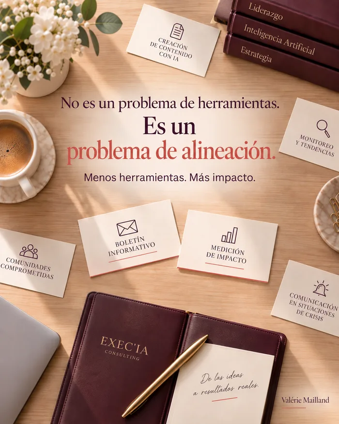

Más herramientas de IA
no significa más impacto.
No es un problema de herramientas.
Es un problema de elección.
 Artículo desarrollado a partir de mi publicación en LinkedIn ()
Artículo desarrollado a partir de mi publicación en LinkedIn ()
Actualizado el
Versión breve →
Directores de comunicación: más herramientas de IA no significa más impacto. Es una cuestión de elegir, no de herramientas.
Bastan tres preguntas para decidir: ¿hay un reto real?
¿Un presupuesto y un responsable con nombre?
¿Se podría detener mañana sin lamentarlo?
Sin esa criba, un equipo acaba llevando cinco proyectos a medias en lugar de dos hasta el final. Gartner incluso preveía que el 30 % de los proyectos de IA generativa se abandonarían por falta de valor claro para el negocio.
El ritual que evita esta deriva: una revisión breve cada trimestre, en la que cada herramienta tiene que justificar su lugar.

¿Dirige la comunicación de su empresa?
Conoce ese reflejo: sale una nueva herramienta de IA y se prueba. Luego otra. Y luego otra más.
Al coordinar la comunicación de la red Alumni de McKinsey Francia, vi lo fácil que es añadir una herramienta más. Y lo raro que es tomarse el tiempo de preguntarse cuál importa.
Ese reflejo no tiene nada de ligero. Cada herramienta nueva promete triunfar donde falló la anterior. Y negarse a probarla da la sensación de quedarse atrás. La presión es real, alimentada por la velocidad a la que salen nuevas versiones.
El problema no son las herramientas. Es elegir entre ellas.
Un estudio de Gartner preveía que el 30 % de los proyectos de IA generativa se abandonarían tras la primera prueba, por falta de valor claro para el negocio. Esa cifra no significa que esos proyectos estuvieran mal hechos técnicamente. Significa que nunca se vincularon a un reto lo bastante claro como para llegar hasta el final.
Una encuesta más reciente apunta en la misma dirección. Publicada por Gartner en abril de 2026 y realizada a 782 responsables de infraestructura y operaciones informáticas, muestra que solo el 28 % de los casos de uso de IA cumple plenamente sus objetivos de rentabilidad, y que el 20 % fracasa, sobre todo por ser demasiado ambicioso o estar mal delimitado.
¿El síntoma más fácil de detectar?
Un equipo que enumera sin dudar las cinco últimas herramientas probadas, pero al que le cuesta decir cuál cambió algo medible. No es falta de curiosidad. Es que falta un filtro entre la prueba y la adopción.
🛠️ ¿Por qué más herramientas de IA no significa más impacto?
Porque más herramientas significa más dispersión. Y un equipo que lleva cinco proyectos a medias, en lugar de dos hasta el final.
🎯 ¿Qué tres criterios deciden si conviene quedarse con una herramienta de IA?
- ¿Un reto real de marca, de crisis o de lanzamiento, y no una moda que seguir?
- ¿Un presupuesto asumido y una persona lista para decidir, no solo para observar?
- ¿Una herramienta que se podría apagar mañana por la mañana sin que nadie la echara de menos?
¿Por qué estos tres criterios en particular?
Porque cada uno elimina una trampa.
El primero descarta las modas del momento: probar una herramienta porque la usa un competidor no es un reto, es una comparación.
El segundo obliga a decidir: sin presupuesto ni responsable con nombre, una herramienta sigue siendo una prueba, nunca una elección.
El tercero le protege del dinero ya gastado: una herramienta que ya no se atreve a detener, por el tiempo que costó instalarla, acaba costando más que la que nunca se lanzó.
¿Quién debe asumir este papel de elección en un equipo pequeño?
En un equipo de comunicación pequeño, no hace falta crear un puesto. Basta con que una persona, a menudo la que ya gestiona el presupuesto o la planificación, tenga claramente la misión de aplicar los tres criterios a cualquier herramienta nueva, antes de que se instale.
En el día a día, no cambia casi nada, salvo en un momento concreto: cuando alguien propone probar una herramienta nueva. Entonces basta una pregunta: ¿a qué necesidad real responde que no cubran ya nuestras herramientas?
Si nadie plantea esa pregunta, cada herramienta se instala por defecto, sin que nadie la haya elegido. El riesgo no es que se imponga una mala herramienta. Es que convivan diez herramientas mediocres, cada una cubriendo a medias una necesidad que otra ya cubre.
Tres proyectos llevados hasta el final valen más que quince que avanzan en paralelo sin llegar nunca.
La IA puede mostrarle muchas opciones. Nunca elegirá por usted.
¿Qué distingue una herramienta que se conserva de una que se tolera?
Una herramienta que se conserva responde claramente a los tres criterios: un reto con nombre, un presupuesto asumido, una persona dispuesta a responder por ella ante el equipo. Una herramienta que se tolera, en general, no cumple ninguno. Se probó un día, nadie decidió detenerla y sigue funcionando en segundo plano, comiéndose tiempo del equipo sin que nadie la haya elegido.
La diferencia no se ve en la herramienta. Se ve cuando se pregunta al equipo: ¿por qué esta y no otra?
Si la respuesta tarda, es que nunca se eligió. La herramienta se quedó por costumbre. Haga la prueba en su próxima reunión de equipo: elija una herramienta al azar y pida a quien la usa que diga, en una frase, qué resultado ha cambiado. La respuesta, o el silencio, le dirá mucho.
¿Qué pasa si nadie decide?
En la práctica, un obstáculo se repite: nadie tiene claramente la misión de cribar. Cada uno conserva la herramienta que probó, porque le dedicó tiempo y no quiere verla descartada. Sin alguien cuyo papel sea ese, y que no esté apegado a ninguna herramienta, la lista no deja de crecer. Nadie decide no decidir. La lista simplemente crece mientras todos esperan que otro se encargue.
Decidir es también aceptar que una herramienta abandonada no es un fracaso. Es la prueba de que la criba funcionó. Un equipo que nunca abandona nada probablemente nunca ha cribado. Celebre también las herramientas que se detienen: es la señal de que el equipo elige con la cabeza fría, y no por inercia.
¿Cómo aplicar esta criba en el día a día?
La criba funciona mejor como ritual que como gran decisión: una revisión breve cada trimestre, en la que cada herramienta activa tiene que justificar su lugar frente a los tres criterios. Lo que ya no los supera se detiene, sin largos debates.
Ese ritmo evita la trampa más habitual: esperar a la gran limpieza anual, cuando la lista ya se ha duplicado. Un ritual breve y regular exige menos energía. Sobre todo, impide que la lista llegue a ser tan larga como para necesitar una gran limpieza.
¿Cómo introducir este ritual sin añadir una nueva carga?
Manteniéndolo corto. Bastan quince minutos si cada herramienta pasa por los mismos tres criterios, siempre en el mismo orden. Lo que lo vuelve pesado no es su frecuencia. Es la tentación de añadir criterios nuevos cada vez. Tres criterios estables, aplicados sin excepción, valen más que diez criterios ajustados caso por caso.
¿La señal de que funciona?
No es el número de herramientas eliminadas. Es que la lista de herramientas activas deja de crecer sola entre dos revisiones.
💬 En su comunicación, ¿cuántas
iniciativas de IA
avanzan, y cuántas dan vueltas sin terminar nunca?
Fuentes: Gartner, «Predicts 30% of Generative AI Projects Will Be Abandoned After Proof of Concept By End of 2025», 2024; Gartner, «Gartner Says AI Projects in I&O Stall Ahead of Meaningful ROI Returns», 7 de abril de 2026.
Para ir más lejos
Cuatro preguntas más para prolongar la reflexión.
Leer el artículo completounas 3.000 palabras
Cartografiar sus herramientas en una hora
Antes de cribar, hay que ver. Muchos equipos descubren que no saben cuántas herramientas funcionan, quién las paga ni quién las usa.
Basta una tabla de cinco columnas:
la herramienta, y la necesidad que cubre, en una frase;
la persona que más la usa, y la que responde de ella;
el coste, suscripción y tiempo de aprendizaje incluidos;
la fecha del último uso real;
la fecha de la próxima revisión.
Esta tabla suele sacar a la luz duplicados: tres herramientas de redacción, dos generadores de imágenes, una aplicación de transcripción pagada por dos personas. La criba empieza entonces sola.
¿Cómo decir que sí a una herramienta nueva?
Con una prueba corta, cuyas reglas todo el mundo conoce. Una persona, un uso concreto, treinta días, un indicador elegido de antemano.
Al final del mes, tres salidas posibles: la herramienta entra en la lista, sustituye a una existente o se detiene. La prueba no compromete a nada y no se instala por defecto. Este marco hace más fácil el sí, porque hace menos doloroso el no.
La trampa de las funciones de IA ya incluidas
Antes de comprar una herramienta nueva, una comprobación suele ahorrar una suscripción: la suite ofimática, la herramienta de diseño o el software de relación con clientes que ya paga quizá ofrezca la misma función.
Estas funciones integradas son a veces menos espectaculares. Pero tienen una gran ventaja: viven dentro de herramientas que el equipo ya conoce, con las reglas de seguridad ya establecidas.
¿Y las herramientas gratuitas?
Gratis no quiere decir sin coste. A menudo se paga en tiempo de aprendizaje, en datos cedidos y en condiciones de uso que pueden cambiar de un día para otro.
Una herramienta gratuita puede servir para probar una idea. Nunca debería recibir información confidencial, ni convertirse en herramienta de trabajo sin pasar por la misma revisión que las demás.
Por qué la acumulación daña la marca
En comunicación, la dispersión tiene un coste que otras funciones conocen menos: la coherencia. Cada herramienta tiene sus hábitos de tono, sus giros, su estilo visual.
Cuando cinco personas producen con cinco herramientas distintas, la marca acaba hablando con cinco voces. El lector no sabe por qué, pero nota que algo ya no encaja. Reducir el número de herramientas también es proteger una identidad.
¿Cómo mantener una voz de marca con la IA?
Tres reglas sencillas, comunes a todas las herramientas que se conservan:
una guía de estilo breve, con el tono, las palabras que usar y las que evitar, que se da a la herramienta al principio de cada trabajo;
ejemplos de textos logrados, que muestran la voz esperada mejor que una instrucción abstracta;
una revisión humana antes de cualquier publicación, por alguien que conozca la marca.
Cuantas menos herramientas hay, más fácil es cumplir estas reglas. Con dos herramientas, se dominan. Con diez, se abandonan.
¿Y las imágenes generadas?
Aquí yo tendría un cuidado especial. Una imagen producida por una herramienta puede reutilizar, sin decirlo, elementos cercanos a obras protegidas, o el rostro de una persona real.
Antes de publicar, tres comprobaciones: ¿las condiciones de la herramienta permiten un uso comercial?
¿La imagen imita un estilo o una obra reconocible?
¿Muestra a una persona identificable?
En caso de duda, un consejo jurídico cuesta menos que una reclamación.
Profundidad antes que amplitud
Un equipo que domina dos herramientas suele producir mejor que uno que roza diez. El dominio llega con el tiempo: instrucciones afinadas, errores conocidos, atajos aprendidos.
Cada herramienta nueva pone ese contador a cero. Una razón más para elegir pocas y profundizar en lo elegido.
¿Qué hacer cuando un proveedor cambia sus precios o sus condiciones?
Pasa a menudo, y rápido. Una herramienta gratuita pasa a ser de pago, una función desaparece, las reglas sobre los datos cambian.
Un equipo que depende de diez herramientas sufre esos cambios diez veces. Un equipo que eligió dos puede seguirlos de cerca y preparar una alternativa. Dos precauciones ayudan: comprobar que se pueden exportar los contenidos con facilidad, y guardar las instrucciones que funcionan, para reutilizarlas en otro sitio si hace falta.
La IA en la comunicación de crisis
Una crisis es el peor momento para descubrir los límites de una herramienta. Las respuestas tienen que ser exactas, fechadas, validadas y, a veces, revisadas por un jurista.
La IA puede ayudar a preparar mensajes clave, resumir lo que se dice o traducir un comunicado. Nunca debe publicar sola, ni responder directamente a un periodista o a un cliente enfadado. Fije esta regla con calma, antes de la crisis: no tendrá que improvisarla en el peor momento.
¿Cómo implicar a las agencias y a los proveedores?
Compartiendo con ellos la lista de herramientas elegidas y sus reglas de marca. Una agencia que usa sus propias herramientas sin conocer sus decisiones vuelve a traer la dispersión que acaba de reducir.
Suele bastar una conversación al inicio de la colaboración: ¿qué herramientas usan, para qué, y cómo respetan nuestra guía?
Evita muchas correcciones de última hora.
¿Qué indicadores seguir en una dirección de comunicación?
Tres medidas sencillas muestran si las herramientas sirven:
el plazo entre una solicitud y la publicación;
el número de idas y vueltas de validación por contenido;
la proporción de contenidos publicados sin corrección de fondo.
Si estas cifras no se mueven tras la llegada de una herramienta, la herramienta quita tiempo sin devolverlo. Es un argumento objetivo para decidir en la revisión del trimestre.
¿Y cuando la herramienta viene de la dirección general?
A veces una herramienta se elige arriba, porque un directivo la vio en casa de un colega o en una feria. Merece el mismo examen que las demás, ni más ni menos.
Aplicar los tres criterios a una herramienta que viene de arriba no es falta de lealtad. Es hacerle un favor a la dirección, que quiere un resultado y no una herramienta más. Planteado así, la criba casi siempre se recibe bien.
Un ejemplo tipo
Pensemos en un equipo de comunicación de cinco personas que ha acumulado una decena de herramientas en un año. El mapa muestra tres herramientas de redacción, dos generadores de imágenes, dos herramientas de transcripción y varias pruebas olvidadas.
Tras una revisión, el equipo conserva una herramienta de redacción, una de imágenes y una de transcripción, y detiene el resto. Forma a todos en esas tres herramientas, escribe su guía de estilo y fija su próxima revisión. Tres meses después, produce lo mismo, con menos gastos, una voz más coherente y un equipo menos disperso.
Lo que libera la elección
Elegir pocas herramientas no reduce la ambición. Libera la atención para lo que da valor a una dirección de comunicación: el mensaje, el criterio, la relación con los públicos.
La herramienta sigue siendo un medio. La estrategia sigue siendo su oficio.
¿Cómo evitar la acumulación de herramientas?
Con una regla sencilla: ninguna herramienta nueva sin un uso concreto, un responsable y una fecha de revisión. Una herramienta sin dueño acaba sin servir a nadie, mientras sigue costando dinero.
Cuando llega una herramienta nueva, haga la pregunta correcta: ¿qué herramienta sustituye, o qué uso vuelve innecesario?
Esta disciplina también protege el presupuesto. Cada herramienta retirada libera una suscripción, tiempo de formación y atención para las que quedan.
Una vez al año, haga la lista de las herramientas que paga frente a su uso real. A menudo descubrirá dos equipos que pagan por la misma necesidad.
El buen reflejo: cada nueva suscripción pasa por la misma persona, que comprueba que no duplica otra.
¿Cómo dejar de usar bien una herramienta que ya no sirve?
Fije una fecha, avise a quienes la usan y recupere lo que haga falta: los datos, las plantillas, los buenos hábitos. Detener una herramienta se prepara como un lanzamiento, pero más corto.
Un equipo que sabe parar se atreve más a probar, porque sabe que una prueba no le compromete para siempre.
Avisar con unas semanas de antelación, y dejar que cada uno exporte su trabajo, evita la mayor parte del descontento.
Anote por qué la detiene. Así evitará que vuelva dentro de un año, con otro nombre o de la mano de otro equipo.
Piense también en el proveedor: muchas suscripciones se renuevan solas, a menudo por un año entero. Anote la fecha de cancelación en la agenda.
¿Cuánto cuesta el propio proceso de decidir?
Muy poco dinero y un poco de tiempo. Suele bastar una revisión mensual de algunos usos, con alguien que tenga poder para decir sí o no. Lo caro es no hacerlo: proyectos dispersos que nunca llegan a nada.
Cribar es una inversión de atención, no un presupuesto adicional.
Lo más sencillo: confiar esta cita a la persona que ya fija las prioridades del equipo. El ritual se integra entonces en un tiempo que ya existe.
Para una pyme, una hora al mes en torno a una tabla compartida de los usos en marcha suele bastar para empezar.
El coste real es el valor de decir que no a una herramienta que a alguien le gusta. Por eso hace falta una persona que tenga claramente ese poder.
¿Cómo ayudar a un equipo a decir no a una buena herramienta?
Recordándole que la pregunta no es lo buena que es la herramienta. Es lo útil que es para un reto concreto, ahora. Una herramienta excelente que no sirve a ninguna necesidad prioritaria espera su turno, y el equipo tiene derecho a apreciarla.
Decir que no en ese momento es lo que permite decir un sí más firme a lo que importa.
Deje la respuesta por escrito: servirá de referencia la próxima vez que la herramienta vuelva a la conversación.
Proponga también anotar la herramienta en una lista de espera, con la condición que la haría prioritaria. El no se convierte en un «ahora no», mucho más fácil de aceptar.